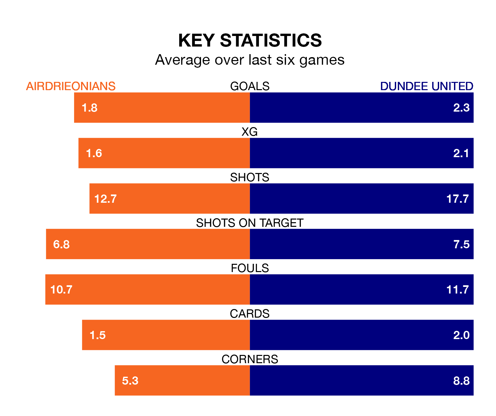

Airdrieonians host Dundee United in Friday's late match at the Excelsior Stadium looking to bounce back from defeat last time out in the Championship.
Airdrieonians, who sit fourth in the league after 34 games, fell to a 4-0 away defeat to Partick Thistle on April 20.
They face a Dundee side who picked up a win in their last match, a 1-0 victory against Ayr United, and who sit first in the table.
With 69 goals in 34 games so far this season, Dundee are the league's highest scorers with 2.0 goals per game. And they are conceding fewer than average, letting in 22 goals at a rate of 0.6 per game.
Airdrieonians, meanwhile, are below average scorers, with 1.3 goals per game, compared to a league average of 1.4. They have conceded 1.2 goals per game.
With Jack Walton between the sticks, United can rely on one of the league's safest pair of hands. He has kept 18 clean sheets in his 34 appearances this season, and no 'keeper has prevented the opposition scoring more often in the Championship.
In the home side's net, Joshua Rae has nine clean sheets in 26 games. He has conceded a goal every 89 minutes, 60% more often than the 146 minutes between goals for Walton.
Airdrieonians are in reasonable form in the Championship, with four wins and two losses from their last six games.
With four wins and a draw over that period, the Terrors' form is slightly better – they have taken 13 points from 18, compared to Airdrieonians's 12.
In the last three years, Airdrieonians and Dundee have played each other on three occasions. Airdrieonians won one of them and Dundee the other.
Their last meeting was on February 27, when Airdrieonians won 2-0 away.
Updated: 07:59 (UTC), 26/04/24